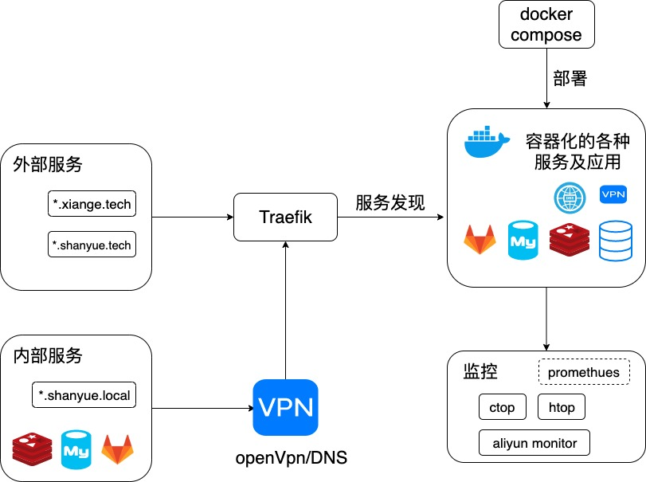
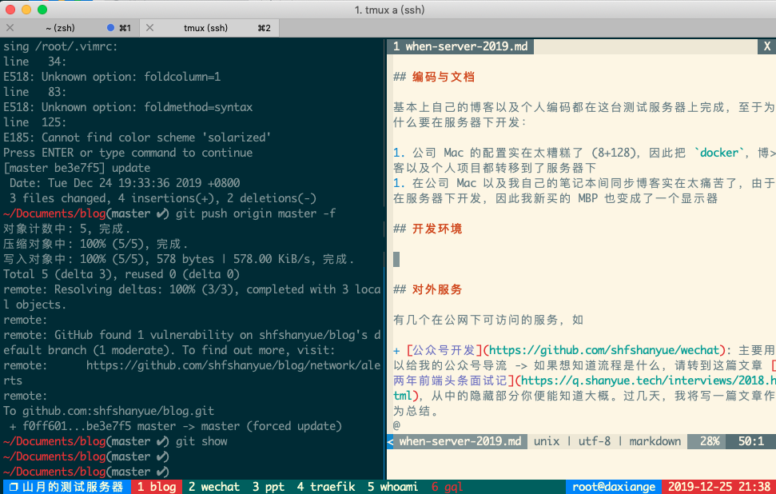

当一八年末的时候，我写了一篇文章 当我有一台服务器时我做了什么
又是年末，我服务器的架构也发生了一些变化，因此总结一番
去年服务器有两台，一台 2C4G，一台 1C2G
今年服务器有三台，以以下名称作为 hostname，配置如下
dev: 1C2G，不到一百块钱。用以日常编码，简单的反向代理以及项目部署shanyue: 2C4G，k8s master nodeshuifeng: 4C16G，k8s work node由于 dev 的机器与去年列举出来的事情相似，这里只介绍下在这台1C2G的服务器上做了什么
简单画了这台服务器的架构图（不太会画，所以建了一个仓库 shfshanyue/graph 用以学习各种架构图画法）

基本上自己的博客以及个人编码都在这台测试服务器上完成，至于为什么要在服务器下开发：
由于在服务器下写博客以及一些个人的代码，因此我新买的 MBP 也变成了一个显示器
zsh + tmux + vim，截图如下

大部分时间都在这个模式下，如果写博客过程中需要截图，则先下载到随便一个目录，然后使用 rsync 复制到目标路径
$ rsync ~/Documents/tmux.png dev:/path/Documents/blog/op/assets/dev-env.pngvscode remote
如果需要调试代码，或者在写 typescript，则使用 vscode remote 来完成工作
在 vscode 插件中关键字搜索，安装下载最多的三个插件就是了
如果调试前端页面需要在浏览器中打开地址，比如 IP:8000，一般采用两种方案
nginx镜像 + volume挂载 + docker-compose + traefik服务发现。略微麻烦npm run dev + openvpn。在本地环境中的浏览器通过 openvpn 连接局域网如果调试后端接口，需要打断点直接使用 vscode remote
有几个在公网下可访问的服务，如
traefik 的负载均衡及服务发现reveal.js 页面主要以数据库为主，使用 local DNS + traefik + openvpn 暴露在本地环境，使用禁掉公网端口以及仅在内网访问的IP白名单保证安全
postgres，主要是一个关于诗词的数据库redistraefik dashboard，管理流量另外，这些对内对外的服务均是通过 docker 以及 docker-compose 部署
以下是我博客的历程
k8s 就把博客挪出了netlify，但是网络不好alioss + github actions，速度挺好，但是对 http rewrite 支持的不是很好以后将会考虑 serverless
你可以发现，我现在更多的转向了一些免费的云服务，如
serverless 可以写后端服务，我将把我的公众号的服务迁移过来。国内可用阿里云以及腾讯云，国外 awsdynomodb 与 tablestore 免费的数据存储oss 很便宜的对象存储服务netlify 免费的静态网站托管托管服务github actions 免费的CICD及构建服务器sentry 免费的错误日志收集系统github 免费的私有仓库服务prerender.io 免费的预渲染服务嗯，有了这些都可以做一个自由开发者了 (自惭形秽中...)
数据库放在公网访问有点危险，用docker建了vpn在本地开发访问。使用了以下镜像
前后端需要做一个反向代理，选择了 traefik，更方便的服务配置以及服务发现，只需要配置容器的 labels 就可以部署成功
另外 traefik 可以很方便的自动生成 ssl/tls 证书，为你提供 https 服务
有了这么多的服务，但有的东西不好放在公网，如 redis，postgres 一些私有服务以及开发待调试的服务，又记不住端口号，所以又搭了一个 dns server，方便在本地访问
初期折腾服务器的时候经常需要重装系统，并且我有三台服务器，自动化运维是必不可少的了。
必备工具如 docker，git，vim，tmux，jq 都是通过 ansible 进行的安装
可以参考我的配置
当你有了一台新服务器时，你可以遵循以下步骤
没有像去年那样使用 prometheus 一套，只简单了使用了两个命令以及阿里云自带的监控
ctop: 监控容器htop: 监控进程如果说与去年有对比的话，体现在两方面
github actions，serverless，netlify 等另外，还有一方面是自建了 k8s 集群 (真是烧钱)，将会在另一个仓库中介绍它的体系。但是如果你对 k8s 没有什么兴趣的话，这一台1C2G的服务器完全满足你的要求